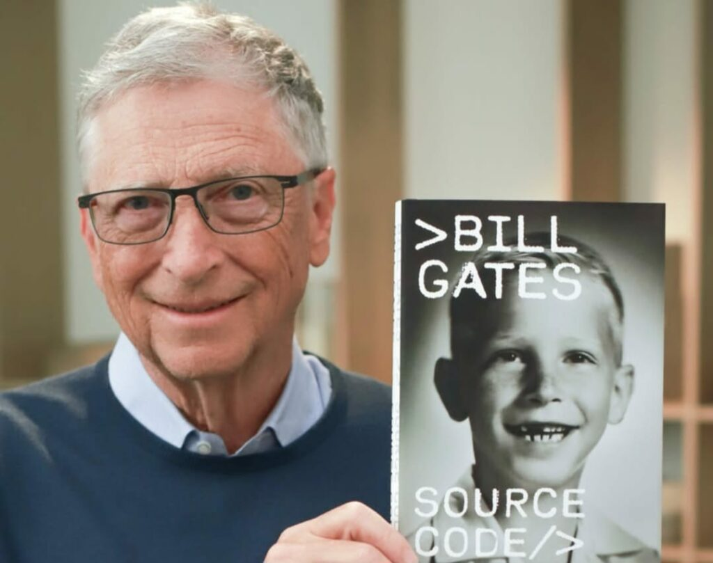
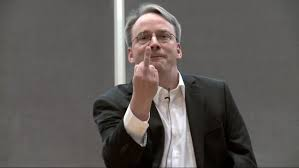
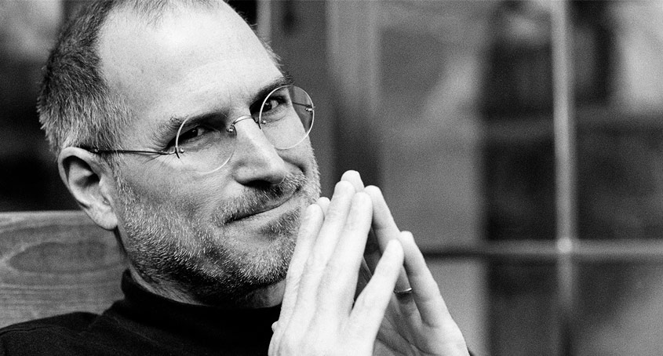

 O primeiro "computador pessoal" foi o Kenbak-1, lançado em 1971. Tinha 256 bytes de memória e foi anunciado na revista Scientific American por US$ 750; todavia, não possuía CPU e era, como outros sistemas desta época, projetado para uso educativo (ou seja, demonstrar como um "computador de verdade" funcionava). Em 1977 foi lançado o primeiro microcomputador como conhecemos hoje, o Apple II. Nos anos 1980, a IBM, líder no mercado de grandes computadores, resolveu entrar no mercado da microinformática com o PC, porém faltava o Sistema Operacional. Para isso, fechou contrato com a recém-criada Microsoft. Todavia, a Microsoft não possuía o software ainda. O jovem Bill Gates foi a uma pequena empresa que havia desenvolvido o sistema para o processador da Intel e decidiu comprá-lo, pagou cerca de US$ 50 mil, personalizou o programa e vendeu-o por US$ 8 milhões, mantendo a licença do produto. Este viria a ser o MS-DOS.
 A Apple Computer Inc foi criada em abril de 1976 para comercializar um computador pessoal criado por Wozniak poucos meses antes. A ideia para o equipamento surgiu durante uma reunião do Homebrew Computer Club em 5 de março de 1975. Após ver um folheto sobre microprocessador, Wozniak teve uma visão onde visualizou "um teclado, uma tela e um computador, todos juntos num pacote integrado".[32] Após meses trabalhando no projeto, em 29 de junho de 1975 surgem os primeiros caracteres na tela, em resposta ao digitar das teclas. "Digitei algumas teclas no teclado e fiquei chocado! As letras apareceram na tela. Foi a primeira vez na história que alguém digitou uma letra num teclado e viu aparecer na tela de seu computador, bem na sua frente" afirmou Wozniak.[36] Fascinado pela funcionalidade do aparelho, Jobs convenceu Wozniak a comercializar o equipamento. Para tanto, decidiram abrir uma empresa, juntando um elemento mais velho e experiente chamado Ronald Wayne, colega de Wosniak na Atari. Entre as primeiras sugestões para nome estavam termos da computação como Matrix, neologismos como Executek e nomes "desinteressantes" como Personal Computer Inc. Por fim, Jobs propõe Apple Computers. "Eu estava numa das minhas dietas frugívoras. Tinha acabado de voltar da fazenda de maçãs. O nome parecia divertido, espirituoso e não intimidante. Apple tirava a pressão da palavra computador. Além disso, nos poria à frente da Atari na lista telefónica", explicou ao amigo Wozniak.[36] A divisão de ações e lucros foi dividida em 45% para Jobs, 45% para Wozniak e 10% para Wayne. Este último, que foi o criador do primeiro logotipo da Apple e do manual do Apple I, acabaria por vender algumas semanas depois, a sua parte aos demais sócios por oitocentos dólares.[37][38]
 Artigo principal: História do Linux Os primeiros protótipos do Linux foram lançados publicamente na Internet no final de 1991 a partir de um servidor FTP em sua universidade. [ 8 ] [ 21 ] A versão 1.0 foi lançada em 14 de março de 1994. [ 22 ] Torvalds teve seu primeiro contato com o Projeto GNU no outono de 1991, quando outro estudante de ciência da computação de língua sueca, Lars Wirzenius, o levou à Universidade de Tecnologia para ouvir a palestra do guru do software livre Richard Stallman . Devido à palestra e à pressão de outros colaboradores, Torvalds acabou trocando sua licença original (que proibia o uso comercial) para a Licença Pública Geral GNU versão 2 (GPLv2) de Stallman para seu kernel Linux . [ 23 ] Após uma visita à Transmeta no final de 1996, [ 24 ] Torvalds aceitou uma posição na empresa na Califórnia, onde trabalhou de fevereiro de 1997 a junho de 2003. Ele então se mudou para o Open Source Development Labs , que desde então se fundiu com o Free Standards Group para se tornar a Linux Foundation , sob cujos auspícios ele continua a trabalhar. Em junho de 2004, Torvalds e sua família se mudaram para Dunthorpe, Oregon [ 25 ] para ficar mais perto da sede do OSDL em Beaverton . De 1997 a 1999, ele esteve envolvido no 86open , ajudando a selecionar o formato binário padrão para Linux e Unix . Em 1999, ele foi nomeado pela MIT Technology Review TR100 como um dos 100 maiores inovadores do mundo com menos de 35 anos. [ 26 ] Em 1999, a Red Hat e a VA Linux , ambas desenvolvedoras líderes de software baseado em Linux, presentearam Torvalds com opções de ações em gratidão por sua criação. [ 27 ] Naquele ano, ambas as empresas abriram o capital e o valor das ações de Torvalds disparou brevemente para cerca de US$ 20 milhões.